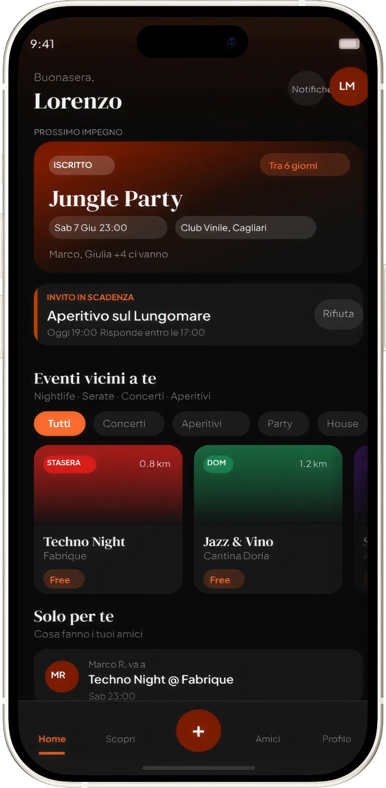
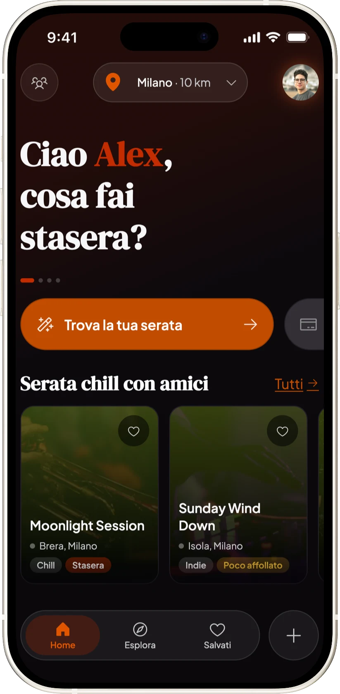
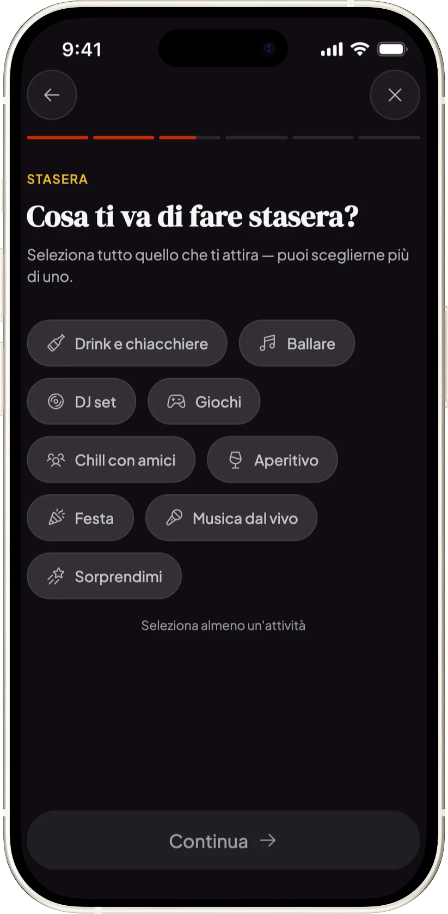
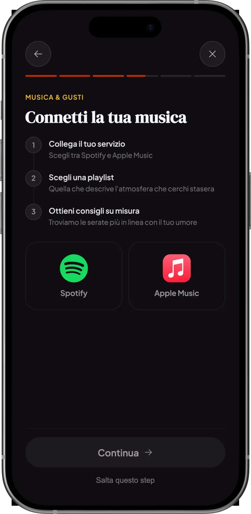
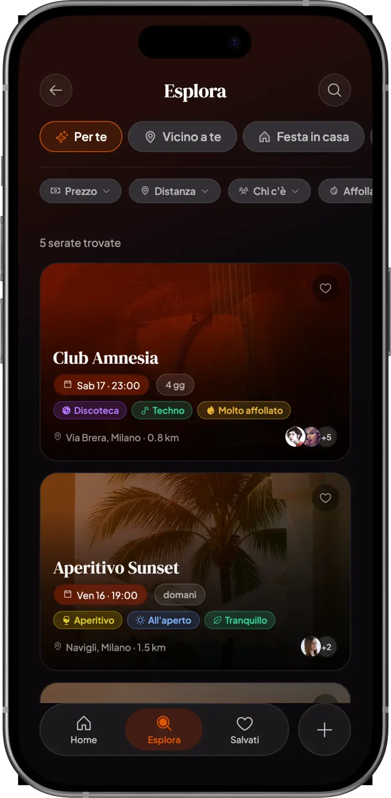
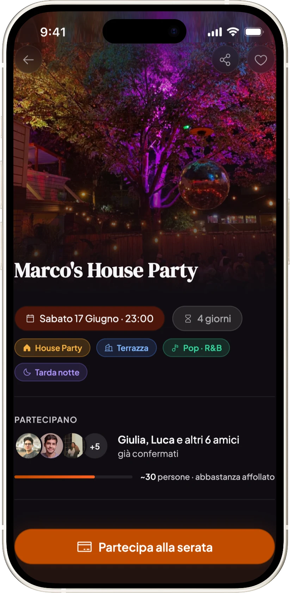
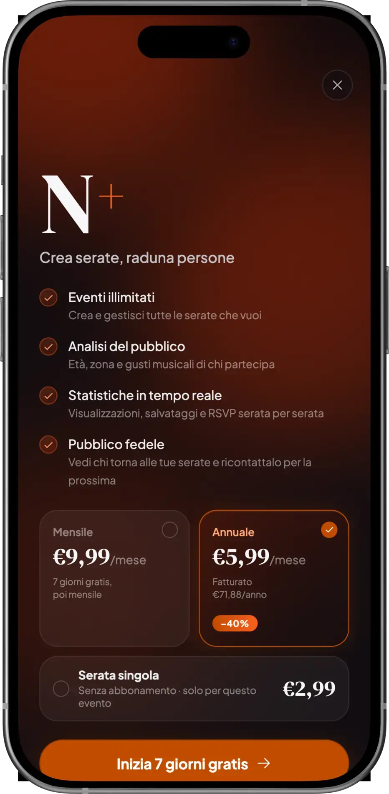
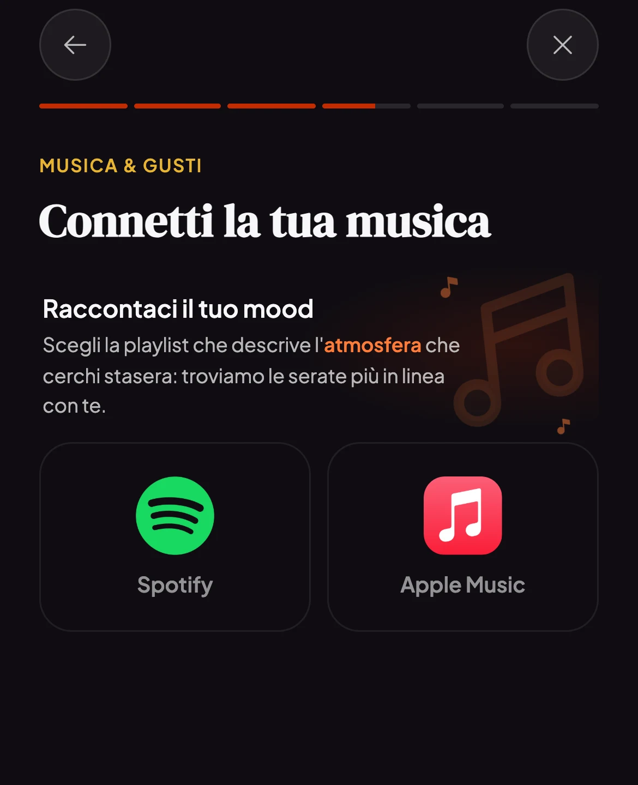
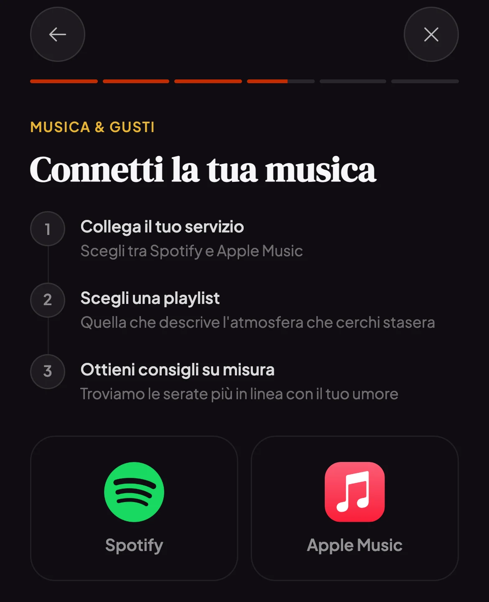

Informazioni frammentate
Le serate vivono tra storie Instagram, chat e passaparola: qualcuno ti passa un’informazione, ma poi non riesci più a ritrovarla.
Case study 02 — Personal project
Personal project · Web app funzionante · Design AI-assisted
5
Interviste
35
Risposte al sondaggio
10
Insight di ricerca
1
Web app funzionante
Tre settimane in totale tra ricerca e design; la web app funzionante e installabile è stata costruita negli ultimi 10 giorni, poi condivisa per un primo ciclo di feedback con amici, colleghi e una commissione di designer dello studio Sketchin.
«Ok, stasera usciamo. Ma… che cosa facciamo?»
La ricerca della serata passa da Instagram, passaparola e scroll infinito: le informazioni si perdono e non esiste un posto pensato per questo. La ricerca della serata diventa più faticosa della serata stessa.
Le serate vivono tra storie Instagram, chat e passaparola: qualcuno ti passa un’informazione, ma poi non riesci più a ritrovarla.
Dalla ricerca è emerso un problema concreto: il genere musicale dichiarato da un locale spesso non corrisponde a quello che viene davvero suonato.
Gli strumenti esistenti partono dall’offerta dei locali, non dalle preferenze di chi esce.
5 interviste, 35 risposte al sondaggio, desk research: 10 insight per capire come le persone scelgono davvero dove passare la serata. I tre che hanno pesato di più sulle decisioni di design:
Non due binari separati. Un processo intrecciato, dove l’AI e il mio giudizio si passano il lavoro di continuo: l’AI esegue, io decido quando fidarmi e quando riprendere il controllo.
Tutta la ricerca con Perplexity; scraping dei commenti su Reddit con Claude Code; interviste e sondaggi classici, analizzati con Perplexity guidato da una knowledge base sul metodo costruita dalle lezioni del master.
Perplexity · Claude CodeMoodboard e style tile (con l’aiuto di Claude), poi wireframe e UI. Il quiz a 5 domande nasce qui, come risposta diretta al problema dello scroll.
Figma · ClaudeIstruzioni dettagliate a Claude e una knowledge base che faceva da design system, regole WCAG incluse per passare i check. Quando non rendeva bene un’interfaccia, gli passavo esempi o portavo il pezzo su Figma con html.to.design e MCP, per poi riportarlo nel codice.
Claude Code · Antigravity · MCPTestare sul telefono, non sul prototipo: in mano emergono cose che a schermo non si notano. È così, per esempio, che ho corretto il modo in cui la musica veniva comunicata.
PWALa prima home generata da Claude Code era una dashboard: prossimo impegno, invito in scadenza, eventi vicini, cosa fanno gli amici. Funzionale, ma banale. L’ho scartata.
Due ragioni: poco contesto all’AI e un’intenzione mia poco chiara — il risultato vale quanto l’intenzione che gli dai. Ho ridiretto verso una home quiz-first: il quiz è ciò che distingue Nite, e la home deve portare lì, non mostrare tutto.


L’AI ha generato la prima versione. Il giudizio su cosa tenere e cosa buttare è rimasto mio.
Tutto quello che serve per decidere, in una schermata.
Dalla home, cinque domande essenziali — luogo, attività, gruppo, budget, affollamento — costruiscono la proposta più adatta in pochi secondi. Zero fatica.

Quando scegli un’attività musicale, il quiz propone di collegare Spotify o Apple Music: il sistema confronta i tuoi gusti reali con la musica dell’evento. Serve a indicare meglio il genere che cerchi, non a promettere quelle canzoni.
Nasce da un insight di ricerca — il mismatch tra genere dichiarato e musica realmente suonata — tradotto in fase di ideazione nel collegamento con Spotify o Apple Music.

Gli eventi più compatibili con le risposte al quiz. Già dalla card si leggono tag e segnali rapidi — genere, affollamento, data — con filtri e ordinamento per affinare la proposta.

Mood musicale raccontato dalla playlist, affollamento previsto, persone presenti, pagamento: tutto per decidere senza uscire dalla schermata.

Chiunque crea una serata: decide chi invitare, se renderla gratuita, a pagamento o con spesa condivisa, e la condivide con una card dedicata. I locali pubblicano tramite abbonamento — il modello di business.

Niente App Store: si installa direttamente dal browser alla schermata Home, a tutto schermo come una vera app.
Non un mockup, ma una web app reale e installabile. Metterla in mano alle persone ha confermato l’interesse e fatto emergere cosa semplificare.
La schermata per collegare la musica spiegava il flusso in tre step che, di fatto, nessuno leggeva. L’ho collassata in un’unica schermata diretta: si capisce a colpo d’occhio e si va avanti. Già in app.


Serve un modo più semplice di attivarlo, senza dover creare una playlist per ogni serata.
L’onboarding musica è già stato semplificato in app; il matching lato organizzatore resta il prossimo passo di iterazione.